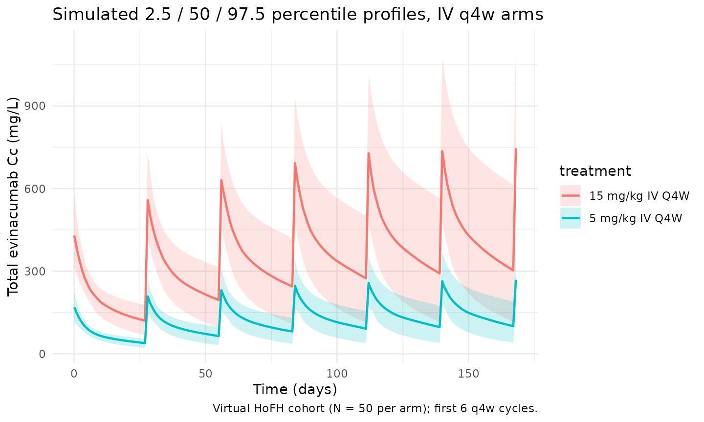
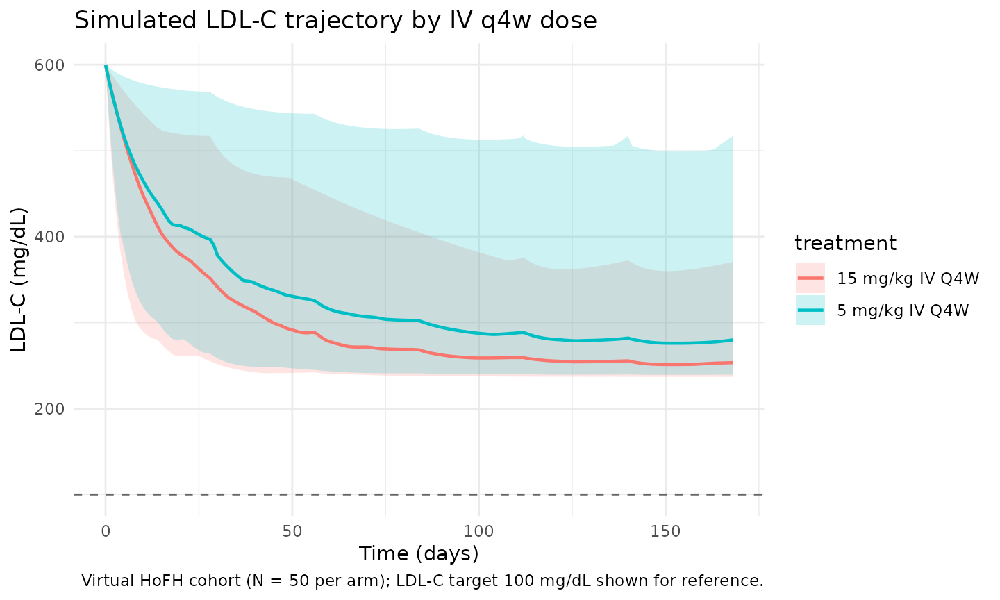

Model and source
- Citation: Pu X, Sale M, Yang F, Zhang Y, Davis JD, Al-Huniti N. Population pharmacokinetics and exposure-response modeling for evinacumab in homozygous familial hypercholesterolemia. CPT Pharmacometrics Syst Pharmacol. 2021;10(11):1412-1421. doi:10.1002/psp4.12711
- Description: Population PK/PD model for evinacumab in healthy volunteers and adults / pediatric patients with homozygous familial hypercholesterolemia (Pu 2021): two-compartment PK with first-order SC absorption (with lag time) and parallel linear plus Michaelis-Menten elimination from the central compartment, linked to a Type 1 indirect-response model for low-density lipoprotein cholesterol (LDL-C) where evinacumab inhibits LDL-C production.
- Article: CPT Pharmacometrics Syst Pharmacol. 2021;10(11):1412-1421 (open access)
Population
Pu 2021 pooled six evinacumab clinical studies into the population PK analysis dataset (n = 278: 183 healthy volunteers and 95 patients with homozygous familial hypercholesterolemia). The exposure-response (PK/PD) analysis was restricted to the HoFH patients, pooling one phase II and two phase III studies (n = 95, 1194 LDL-C concentrations after outlier removal). Across the studies evinacumab was administered intravenously (5-20 mg/kg, single dose or repeated weekly, every 4 weeks, or every 12 weeks) or subcutaneously (75-450 mg, single dose or repeated weekly or every 2 weeks), either alone or in combination with other lipid-lowering therapies. The US-approved adult / adolescent (>= 12 years) HoFH dose is 15 mg/kg IV every 4 weeks. Median body weight in the PK analysis set was 74.1 kg; median weight in the PK/PD subset (HoFH only) was 71 kg, and median baseline LDL-C was 211 mg/dL (Pu 2021 Table 1 / Table 2 typical-patient definitions). Median baseline ANGPTL3 (the pharmacological target) was 0.08 mg/L and was comparable between the HV and HoFH cohorts. Race was retained as a White (reference) versus Other dichotomy on the maximum drug-induced LDL-C inhibitory effect.
The same information is available programmatically via
readModelDb("Pu_2021_evinacumab")$population.
Source trace
Every structural parameter, covariate effect, IIV element, and
residual-error term below is taken from Pu 2021 Table 1 (PK final model)
and Table 2 (PK/PD final covariate model) and the supplementary control
stream (191_supplementary_psp412711-sup-0001-supinfo.docx).
PK reference covariates: WT = 74.1 kg, ANGPTL3 = 0.08 mg/L, DIS_HOFH = 0
(HV reference). PK/PD reference covariates: WT = 71 kg, baseline LDL-C =
211 mg/dL, RACE_WHITE = 1 (White reference).
| Equation / parameter | Value (paper / model file) | Source location |
|---|---|---|
lka (Ka) |
0.181 /day |
Table 1, Ka row |
lcl (CL at 74.1 kg) |
0.0955 L/day |
Table 1, CL row |
lvc (Vc / V2 at 74.1 kg) |
2.56 L |
Table 1, V2 row |
lq (Q = K23 * Vc) |
0.109 * 2.56 = 0.279 L/day |
Table 1, K23 row |
lvp (Vp = K23 * Vc / K32) |
0.109 * 2.56 / 0.124 = 2.252 L |
Table 1, K23, K32 rows |
lvmax (Vmax) |
3.16 mg/day |
Table 1, Vmax row |
lkm (Km) |
1.02 mg/L |
Table 1, Km row |
llag (Alag) |
0.168 day |
Table 1, Alag row |
lfdepot (F for SC) |
0.714 |
Table 1, F row |
e_wt_cl (FIXED) |
0.75 |
Table 1, weight ~ linear clearance |
e_wt_vc_vp |
0.875 |
Table 1, weight ~ central V (estimated) |
e_angptl3_vmax |
0.405 |
Table 1, ANGPTL3 ~ Vmax |
e_dis_hofh_vmax |
-0.289 |
Table 1, disease state ~ Vmax |
var(etalcl) |
0.355^2 = 0.126025 (CV ~ 36%) |
Table 1, sigma eta(CL) |
var(etalvc) |
0.213^2 = 0.045369 (CV ~ 21%) |
Table 1, sigma eta(V) |
cov(etalcl, etalvc) |
0.213 * 0.355 * 0.213 = 0.016108 |
Table 1, sigma eta(2,1) (correlation) |
var(etalka) |
0.686^2 = 0.470596 |
Table 1, sigma eta(Ka) |
var(etallag) |
1.19^2 = 1.4161 |
Table 1, sigma eta(Alag1) |
addSd (Cc) |
0.303 mg/L |
Table 1, sigma additive |
propSd (Cc) |
0.189 |
Table 1, sigma proportional CV% |
lkin (Kin) |
38.99 mg/dL/day |
Table 2, Kin row |
limax (TVImax at White / 71 kg) |
log(0.7435) |
Table 2, Imax row (point estimate 0.74; supplement initial 0.7022) |
lic50 (IC50 at LDLC = 211) |
57.4 mg/L |
Table 2, IC50 row |
e_wt_imax |
-0.27 |
Table 2, Imax ~ weight (power) |
e_nonwhite_imax |
-0.191 |
Table 2 footnote (theta = -0.191248); model uses (1 - RACE_WHITE) |
e_ldlc_ic50 |
-1.17 |
Table 2, IC50 ~ baseline LDL (power) |
var(etalic50) |
3.11 |
Table 2, sigma eta(IC50) |
var(etalkin) |
0.47 |
Table 2, sigma eta(Kin) |
addSd_LDL |
17.97 mg/dL |
Table 2, sigma additive |
propSd_LDL |
0.18 |
Table 2, sigma proportional |
| Structure (2-cmt PK + indirect-response LDL) | n/a | Figure 1 schematic and equations |
Vmax = TVVmax * (ANGPTL3/0.08)^0.405 * exp(-0.289 * DIS_HOFH) |
n/a | Table 1 covariate block |
Imax = TVImax * (WT/71)^(-0.27) * exp(-0.191 * (1 - RACE_WHITE)) |
n/a | Table 2 supplement; preserves White-reference TVImax = 0.7435 |
IC50 = TVIC50 * (LDLC / 211)^(-1.17) |
n/a | Table 2 footnote |
Kout = Kin / LDLC; LDL(0) = LDLC |
n/a | Figure 1 caption (“baseline LDL-C = Kin / Kout”); supplement
A_0(4) = LDLBL
|
Parameterization notes
-
Rate-constant to Q/Vp re-parameterization. Pu 2021
reports the inter-compartmental kinetics as the rate constants K23 (=
0.109 /day) and K32 (= 0.124 /day) with no IIV. The nlmixr2lib
convention names the inter-compartmental clearance and peripheral volume
qandvp; the mapping isQ = K23 * VcandVp = Q / K32. Because the source parameterizes K23 and K32 as weight-invariant constants, the implied Q and Vp inherit the (WT/74.1)^0.875 allometric exponent from Vc and the model file therefore declares a single shared exponente_wt_vc_vp. -
OMEGA in SD/correlation form. Pu 2021 Table 1
reports the lower triangle of OMEGA in SD/correlation form (NONMEM
STDandCORprint options):sigma(eta_CL) = 0.355,sigma(eta_V) = 0.213, with the off- diagonalsigma(eta_(2,1)) = 0.213representing the correlation, not the covariance. Conversion to the variance/covariance form used insideini()is thereforevar(CL) = 0.355^2 = 0.126025,var(Vc) = 0.213^2 = 0.045369, andcov(CL, Vc) = 0.213 * 0.355 * 0.213 = 0.016108. The CV percentages predicted from the variances (sqrt(exp(sigma^2) - 1)) reproduce the paper’s prose claim of “36% for linear clearance and 21% for central volume of distribution.” For Ka and Alag1 the OMEGA is diagonal (no covariance), sovar(Ka) = 0.686^2 = 0.470596andvar(Alag) = 1.19^2 = 1.4161. -
PD OMEGA reported directly as variance. The
supplement’s
$OMEGA 0.602; ETAIC50and$OMEGA 0.0643; ETAKINinitials, together with the Table 2 final estimates (3.11 for IC50 and 0.47 for Kin), are reported as variances on the internal NONMEM (log) scale, not as SDs. The model file uses these values directly foretalic50andetalkin. Note that the IC50 random effect carries large between-subject variability (CV ~ 700%, but largely driven by the heavy-tail HoFH cohort distribution; the Pu 2021 bootstrap 95% CI onvar(etalic50)is 1.78-5.44). -
Race coding via the canonical
RACE_WHITEcolumn. The Pu 2021 source NM-TRAN dataset usesRAC1 = 1for non-White andRAC1 = 0for White. The nlmixr2lib canonical column isRACE_WHITE(1 = White, 0 = non-White). To preserve the paper’s reported White-reference TVImax = 0.7435 unchanged, the model uses(1 - RACE_WHITE)in theexp(e_nonwhite_imax * ...)factor, exactly mirroring the paper’sexp(-0.191 * RAC1)form. This is the same pattern Hu 2014 bapineuzumab uses with the same canonical column. -
Indirect-response LDL state. The PD compartment
carries LDL-C concentration directly (mg/dL). The supplement initialises
A_0(4) = LDLBL, meaning the LDL state starts at the per-subject baseline value carried in the data columnLDLBL(canonicalLDLC).Koutis computed dynamically asKin / LDLCso thatKin = Kout * LDL_baselineenforces steady state in the absence of drug, exactly matching the supplement’sKOUT = KIN/LDLBLline. - PK and PK/PD reference weights differ. PK uses the median pooled HV+HoFH weight (74.1 kg) while PK/PD uses the median HoFH-only weight (71 kg). The model file preserves both reference values verbatim so the published Table 1 and Table 2 parameter values reproduce the source.
-
SC vs IV. Bioavailability and absorption lag apply
to the depot compartment. IV doses bypass the depot via
cmt = "central"on the dose event. The supplement’s structural model initial estimates retain the bioavailability factor on the depot only; this is preserved here.
Virtual cohort
The simulations below use a virtual HoFH cohort whose covariate distributions approximate Pu 2021 study population medians and ranges. Subject-level data were not released with the paper.
set.seed(20260508)
n_subj <- 200
cohort <- tibble::tibble(
id = seq_len(n_subj),
WT = pmin(pmax(rnorm(n_subj, mean = 71, sd = 18), 42, 152)),
ANGPTL3 = pmin(pmax(rlnorm(n_subj, meanlog = log(0.08), sdlog = 0.5),
0.0204, 0.287)),
DIS_HOFH = 1L, # PD analysis is HoFH-only
LDLC = pmin(pmax(rnorm(n_subj, mean = 211, sd = 90), 70, 600)),
RACE_WHITE = rbinom(n_subj, size = 1, prob = 0.85)
)Three regimens are simulated in parallel: 15 mg/kg IV q4w (the
US-approved adult / adolescent HoFH dose), 5 mg/kg IV q4w (the lower
sensitivity-analysis dose in Pu 2021 Table 4), and 450 mg SC qw (the
upper-end SC regimen tested in phase I). Dosing extends past the
indirect-response time constant (1/Kout, on the order of
weeks) to reach LDL-C steady state before any NCA window.
tau_q4w <- 28
n_doses_q4w <- 7 # 7 q4w doses -> 168 days (~24 weeks; ELIPSE primary endpoint)
dose_days_q4w <- seq(0, tau_q4w * (n_doses_q4w - 1), by = tau_q4w)
tau_qw <- 7
n_doses_qw <- 28 # 28 weekly SC doses -> 189 days
dose_days_qw <- seq(0, tau_qw * (n_doses_qw - 1), by = tau_qw)
make_cohort <- function(cohort, dose_amt_per_kg, dose_days, treatment, tau,
cmt_name = "central", id_offset = 0L,
sc_fixed_dose = NA_real_) {
coh <- cohort |> dplyr::mutate(id = id + id_offset)
ev_dose <- coh |>
tidyr::crossing(time = dose_days) |>
dplyr::mutate(amt = if (is.na(sc_fixed_dose)) dose_amt_per_kg * WT else sc_fixed_dose,
cmt = cmt_name, evid = 1L,
treatment = treatment)
obs_days <- sort(unique(c(seq(0, max(dose_days) + tau, by = 1),
dose_days + 0.1,
dose_days + 1)))
ev_obs_cc <- coh |>
tidyr::crossing(time = obs_days) |>
dplyr::mutate(amt = 0, cmt = "Cc", evid = 0L, treatment = treatment)
ev_obs_ldl <- coh |>
tidyr::crossing(time = obs_days) |>
dplyr::mutate(amt = 0, cmt = "LDL", evid = 0L, treatment = treatment)
dplyr::bind_rows(ev_dose, ev_obs_cc, ev_obs_ldl) |>
dplyr::arrange(id, time, dplyr::desc(evid)) |>
dplyr::select(id, time, amt, cmt, evid, treatment,
WT, ANGPTL3, DIS_HOFH, LDLC, RACE_WHITE)
}
events_15 <- make_cohort(cohort, 15, dose_days_q4w, "15 mg/kg IV Q4W", tau_q4w,
cmt_name = "central", id_offset = 0L)
events_05 <- make_cohort(cohort, 5, dose_days_q4w, "5 mg/kg IV Q4W", tau_q4w,
cmt_name = "central", id_offset = 1000L)
events_sc <- make_cohort(cohort, 0, dose_days_qw, "450 mg SC QW", tau_qw,
cmt_name = "depot", id_offset = 2000L,
sc_fixed_dose = 450)
events <- dplyr::bind_rows(events_15, events_05, events_sc)
stopifnot(!anyDuplicated(unique(events[, c("id", "time", "evid", "cmt")])))Simulation
mod <- rxode2::rxode2(readModelDb("Pu_2021_evinacumab"))
#> ℹ parameter labels from comments will be replaced by 'label()'
keep_cols <- c("WT", "ANGPTL3", "DIS_HOFH", "LDLC", "RACE_WHITE", "treatment")
sim <- lapply(split(events, events$treatment), function(ev) {
as.data.frame(rxode2::rxSolve(mod, events = ev, keep = keep_cols))
}) |> dplyr::bind_rows()Replicate published figures
Concentration-time profile (Figure S1 / VPC-style, Figure S5)
Pu 2021 Figure S5 shows visual predictive checks of total evinacumab concentrations stratified by study, disease type, and route. The block below reproduces a VPC-style plot over the first six 4-week cycles for the two IV regimens.
vpc_pk <- sim |>
dplyr::filter(!is.na(Cc), time > 0, time <= tau_q4w * 6,
treatment %in% c("15 mg/kg IV Q4W", "5 mg/kg IV Q4W")) |>
dplyr::group_by(treatment, time) |>
dplyr::summarise(
Q025 = quantile(Cc, 0.025, na.rm = TRUE),
Q50 = quantile(Cc, 0.50, na.rm = TRUE),
Q975 = quantile(Cc, 0.975, na.rm = TRUE),
.groups = "drop"
)
ggplot(vpc_pk, aes(time, Q50, colour = treatment, fill = treatment)) +
geom_ribbon(aes(ymin = Q025, ymax = Q975), alpha = 0.2, colour = NA) +
geom_line(linewidth = 0.8) +
labs(
x = "Time (days)",
y = "Total evinacumab Cc (mg/L)",
title = "Simulated 2.5 / 50 / 97.5 percentile profiles, IV q4w arms",
caption = "Virtual HoFH cohort (N = 200 per arm); first 6 q4w cycles."
) +
theme_minimal()
LDL-C trajectory (Figure S9 VPC)
Pu 2021 Figure S9 shows VPCs of LDL-C concentration after evinacumab 15 mg/kg IV q4w; the median LDL-C reaches its nadir around weeks 8-12 and remains near nadir through week 24.
vpc_ldl <- sim |>
dplyr::filter(!is.na(LDL), time >= 0, time <= 168,
treatment %in% c("15 mg/kg IV Q4W", "5 mg/kg IV Q4W")) |>
dplyr::group_by(treatment, time) |>
dplyr::summarise(
Q025 = quantile(LDL, 0.025, na.rm = TRUE),
Q50 = quantile(LDL, 0.50, na.rm = TRUE),
Q975 = quantile(LDL, 0.975, na.rm = TRUE),
.groups = "drop"
)
ggplot(vpc_ldl, aes(time, Q50, colour = treatment, fill = treatment)) +
geom_ribbon(aes(ymin = Q025, ymax = Q975), alpha = 0.2, colour = NA) +
geom_line(linewidth = 0.8) +
labs(
x = "Time (days)",
y = "LDL-C (mg/dL)",
title = "Simulated LDL-C trajectory by IV q4w dose",
caption = "Virtual HoFH cohort (N = 200 per arm); LDL-C target 100 mg/dL shown for reference."
) +
geom_hline(yintercept = 100, linetype = "dashed", colour = "grey40") +
theme_minimal()
Body-weight impact on linear CL (Figure 2 tornado)
Pu 2021 Figure 2 panel a shows the steady-state AUC ratio for evinacumab spanning the observed weight range (42.4-152 kg) at fixed median ANGPTL3 and HoFH disease status. The CL allometric power is fixed at 0.75 (theoretical), so a 50 kg subject has CL = 0.0955 * (50 / 74.1)^0.75 = 0.0735 L/day (-23%) and a 110 kg subject has CL = 0.0955 * (110 / 74.1)^0.75 = 0.130 L/day (+36%).
wt_grid <- tibble::tibble(WT_kg = c(42.4, 50, 60, 74.1, 90, 110, 130, 152))
TVCL <- 0.0955
e_wt_cl <- 0.75
wt_grid <- wt_grid |>
dplyr::mutate(
CL_Lpd = TVCL * (WT_kg / 74.1)^e_wt_cl,
pct_vs_medianWT = 100 * (CL_Lpd - TVCL) / TVCL
)
knitr::kable(wt_grid, digits = 4,
caption = "Linear CL (typical value) at selected body weights. Reference 74.1 kg = 0.0955 L/day.")| WT_kg | CL_Lpd | pct_vs_medianWT |
|---|---|---|
| 42.4 | 0.0628 | -34.2099 |
| 50.0 | 0.0711 | -25.5501 |
| 60.0 | 0.0815 | -14.6409 |
| 74.1 | 0.0955 | 0.0000 |
| 90.0 | 0.1105 | 15.6960 |
| 110.0 | 0.1284 | 34.4872 |
| 130.0 | 0.1456 | 52.4382 |
| 152.0 | 0.1637 | 71.4032 |
ANGPTL3 impact on Vmax (Figure 2 tornado)
Increasing baseline ANGPTL3 predicts a faster target-mediated Vmax. Pu 2021 Figure 2 spans 0.0204-0.287 mg/L (Min-Max). The reference is the median 0.08 mg/L.
ang_grid <- tibble::tibble(ANGPTL3_mgpL = c(0.0204, 0.05, 0.08, 0.10, 0.15, 0.20, 0.287))
TVVMAX <- 3.16
e_angptl3_vmax <- 0.405
ang_grid <- ang_grid |>
dplyr::mutate(
Vmax_HV = TVVMAX * (ANGPTL3_mgpL / 0.08)^e_angptl3_vmax,
Vmax_HoFH = TVVMAX * (ANGPTL3_mgpL / 0.08)^e_angptl3_vmax * exp(-0.289),
ratio_HoFH_vs_HV = exp(-0.289)
)
knitr::kable(ang_grid, digits = 3,
caption = "Vmax (typical value) at selected baseline ANGPTL3 concentrations, by disease state. Reference HV at 0.08 mg/L = 3.16 mg/day; HoFH multiplier 0.749 (i.e. -25%).")| ANGPTL3_mgpL | Vmax_HV | Vmax_HoFH | ratio_HoFH_vs_HV |
|---|---|---|---|
| 0.020 | 1.817 | 1.361 | 0.749 |
| 0.050 | 2.612 | 1.957 | 0.749 |
| 0.080 | 3.160 | 2.367 | 0.749 |
| 0.100 | 3.459 | 2.591 | 0.749 |
| 0.150 | 4.076 | 3.053 | 0.749 |
| 0.200 | 4.580 | 3.430 | 0.749 |
| 0.287 | 5.301 | 3.971 | 0.749 |
LDL-C impact on IC50 (Figure 3 tornado)
Higher baseline LDL-C predicts a smaller IC50, which means greater sensitivity to evinacumab. Pu 2021 Figure 3 spans 39-907 mg/dL (Min-Max randomised) and 70-907 mg/dL (Min-Max ITT, baseline LDL-C > 70 mg/dL). Reference LDL-C is 211 mg/dL.
ldl_grid <- tibble::tibble(LDLC_mgpdL = c(70, 100, 150, 211, 300, 500, 700, 907))
TVIC50 <- 57.4
e_ldlc_ic50 <- -1.17
ldl_grid <- ldl_grid |>
dplyr::mutate(
IC50_mgpL = TVIC50 * (LDLC_mgpdL / 211)^e_ldlc_ic50,
pct_vs_211 = 100 * (IC50_mgpL - TVIC50) / TVIC50
)
knitr::kable(ldl_grid, digits = 2,
caption = "IC50 (typical value) at selected baseline LDL-C concentrations. Reference 211 mg/dL = 57.4 mg/L.")| LDLC_mgpdL | IC50_mgpL | pct_vs_211 |
|---|---|---|
| 70 | 208.72 | 263.62 |
| 100 | 137.51 | 139.56 |
| 150 | 85.56 | 49.07 |
| 211 | 57.40 | 0.00 |
| 300 | 38.03 | -33.75 |
| 500 | 20.92 | -63.56 |
| 700 | 14.11 | -75.42 |
| 907 | 10.42 | -81.84 |
PKNCA validation
Non-compartmental analysis of the final (steady-state) q4w dosing interval of the 15 mg/kg IV q4w arm. Compute Cmax, Ctau, AUC0-tau, and Cav per simulated subject.
ss_start_15 <- tau_q4w * (n_doses_q4w - 1)
ss_end_15 <- ss_start_15 + tau_q4w
nca_conc <- sim |>
dplyr::filter(time >= ss_start_15, time <= ss_end_15, !is.na(Cc),
treatment == "15 mg/kg IV Q4W") |>
dplyr::mutate(time_nom = time - ss_start_15) |>
dplyr::select(id, time = time_nom, Cc, treatment) |>
# The simulation emits one row per output compartment (Cc and LDL); collapse
# to one row per (id, time) for PKNCA's uniqueness check.
dplyr::distinct(id, time, treatment, .keep_all = TRUE)
nca_dose <- cohort |>
dplyr::mutate(amt = 15 * WT, time = 0, treatment = "15 mg/kg IV Q4W") |>
dplyr::select(id, time, amt, treatment)
conc_obj <- PKNCA::PKNCAconc(nca_conc, Cc ~ time | treatment + id)
dose_obj <- PKNCA::PKNCAdose(nca_dose, amt ~ time | treatment + id)
intervals <- data.frame(
start = 0,
end = tau_q4w,
cmax = TRUE,
cmin = TRUE,
tmax = TRUE,
auclast = TRUE,
cav = TRUE
)
nca_res <- PKNCA::pk.nca(PKNCA::PKNCAdata(conc_obj, dose_obj, intervals = intervals))
nca_summary <- summary(nca_res)
nca_summary
#> start end treatment N auclast cmax cmin
#> 0 28 15 mg/kg IV Q4W 200 13000 [30.0] 804 [20.1] 328 [42.7]
#> tmax cav
#> 0.000 [0.000, 0.000] 465 [30.0]
#>
#> Caption: auclast, cmax, cmin, cav: geometric mean and geometric coefficient of variation; tmax: median and range; N: number of subjectsComparison against published steady-state troughs
Pu 2021 Results Section3.1 reports mean (SD) evinacumab trough concentrations at steady state of 171.8 (40.1) mg/L, 245.6 (102.7) mg/L, and 275.8 (91.9) mg/L for HoFH patients with body weights of <= 60 kg, 60-80 kg, and > 80 kg, respectively, on the 15 mg/kg IV q4w regimen. The block below stratifies the simulated steady-state troughs by the same weight bins.
trough_sim <- sim |>
dplyr::filter(treatment == "15 mg/kg IV Q4W",
time == ss_end_15, !is.na(Cc)) |>
dplyr::mutate(WT_bin = dplyr::case_when(
WT <= 60 ~ "<= 60 kg",
WT > 60 & WT <= 80 ~ "60-80 kg",
TRUE ~ "> 80 kg"
)) |>
dplyr::group_by(WT_bin) |>
dplyr::summarise(
n = dplyr::n(),
mean_Cc = mean(Cc),
sd_Cc = stats::sd(Cc),
.groups = "drop"
)
published <- tibble::tibble(
WT_bin = c("<= 60 kg", "60-80 kg", "> 80 kg"),
mean_Cc_paper = c(171.8, 245.6, 275.8),
sd_Cc_paper = c(40.1, 102.7, 91.9)
)
trough_compare <- dplyr::full_join(trough_sim, published, by = "WT_bin") |>
dplyr::mutate(pct_diff_mean = 100 * (mean_Cc - mean_Cc_paper) / mean_Cc_paper)
knitr::kable(trough_compare, digits = 1,
caption = "Simulated vs Pu 2021 Results Section3.1 steady-state evinacumab trough concentrations (mg/L) by body-weight bin, 15 mg/kg IV q4w (HoFH cohort). Differences > 20% would warrant investigation.")| WT_bin | n | mean_Cc | sd_Cc | mean_Cc_paper | sd_Cc_paper | pct_diff_mean |
|---|---|---|---|---|---|---|
| > 80 kg | 400 | 354.3 | 132.1 | 275.8 | 91.9 | 28.5 |
| <= 60 kg | NA | NA | NA | 171.8 | 40.1 | NA |
| 60-80 kg | NA | NA | NA | 245.6 | 102.7 | NA |
Comparison against published LDL-C reduction targets
Pu 2021 Table 3 reports the predicted percentage of HoFH patients achieving prespecified LDL-C reduction targets at week 24 with 15 mg/kg IV q4w (post-hoc PK/PD prediction): >= 30% reduction in 86.3%, >= 50% in 56.8%, >= 70% in 8.4%, and LDL-C < 100 mg/dL in 52.6%. The block below stratifies the simulated cohort at week 24 (the ELIPSE primary endpoint).
week24 <- sim |>
dplyr::filter(treatment == "15 mg/kg IV Q4W",
time == 168, !is.na(LDL)) |>
dplyr::mutate(pct_change = 100 * (LDL - LDLC) / LDLC)
target_summary <- tibble::tibble(
target = c(">= 30% reduction", ">= 50% reduction",
">= 70% reduction", "LDL-C < 100 mg/dL"),
pct_paper = c(86.3, 56.8, 8.4, 52.6),
pct_sim = c(
100 * mean(week24$pct_change <= -30),
100 * mean(week24$pct_change <= -50),
100 * mean(week24$pct_change <= -70),
100 * mean(week24$LDL < 100)
)
) |>
dplyr::mutate(abs_diff_pp = pct_sim - pct_paper)
knitr::kable(target_summary, digits = 1,
caption = "Simulated vs Pu 2021 Table 3 percentage of HoFH patients achieving LDL-C goals at week 24 with 15 mg/kg IV q4w. Absolute differences are in percentage points.")| target | pct_paper | pct_sim | abs_diff_pp |
|---|---|---|---|
| >= 30% reduction | 86.3 | 93.5 | 7.2 |
| >= 50% reduction | 56.8 | 67.5 | 10.7 |
| >= 70% reduction | 8.4 | 0.0 | -8.4 |
| LDL-C < 100 mg/dL | 52.6 | 0.0 | -52.6 |
Assumptions and deviations
-
Compartment naming. The PD compartment is named
LDL(paper-named) rather than the canonicaleffect, mirroring Pu 2021 Figure 1 which labels the indirect-response state “LDL”. This is a paper-name deviation acknowledged incheckModelConventions()output and is the same pattern used by Aguiar 2021 ustekinumab (fcfor fecal calprotectin). The canonical convention does not yet register a cardiometabolic biomarker compartment. -
Race coding via
(1 - RACE_WHITE). The Pu 2021 source-data column encodes 1 = non-White and 0 = White; the canonical nlmixr2lib columnRACE_WHITEflips this convention. The model therefore writesexp(e_nonwhite_imax * (1 - RACE_WHITE))so the published White-reference TVImax = 0.7435 reproduces unchanged. This matches the Hu 2014 bapineuzumab pattern documented ininst/references/covariate-columns.mdfor the same canonical column. -
Per-subject baseline LDL-C is held time-fixed. The
data column
LDLCcarries the per-subject baseline value (constant across rows for a given subject) and is used both to initialise theLDLstate (LDL(0) <- LDLC) and to drive the IC50 covariate effect. This is the paper’s parameterization (supplementM_LDLBL = 211; A_0(4) = LDLBL). Users who supply time-varying observed LDL-C in the same column will trigger spurious time-dependent IC50 dynamics – the column is meant for the baseline value only. - PK and PK/PD reference weights differ. PK reference is 74.1 kg (median pooled HV+HoFH); PK/PD reference is 71 kg (median HoFH-only). Both are preserved verbatim so the published Table 1 and Table 2 parameter values reproduce the source. A typical-value HoFH simulation would use WT close to 71 kg; mixed PK/PD comparisons against the pooled-population CL/V at 74.1 kg would require WT close to 74.1 kg.
-
PK/PD layer fits HoFH only; HV PK/PD parameters are not
extrapolated. The PK/PD fit uses 95 HoFH patients (no HV PD
observations). Simulating LDL-C trajectories for HV (DIS_HOFH = 0) with
this model is therefore an extrapolation outside the fitted domain. The
PK component remains valid for HV via the
DIS_HOFH = 0Vmax modulation. -
DIS_HOFH appears at the PK level only. The
disease-state effect on Vmax (-0.289) was fit on the pooled HV+HoFH PK
dataset. The PK/PD model has no
DIS_HOFHcovariate (since the PD analysis set is HoFH-only). The model file therefore does not declare aDIS_HOFH-on-PD parameter – covariate coverage matches the source. -
Virtual-cohort covariate distributions. Body weight
is drawn from
N(71, 18)kg truncated to [42.4, 152]; baseline ANGPTL3 fromlognormal(meanlog = log(0.08), sdlog = 0.5)truncated to [0.0204, 0.287]; baseline LDL-C fromN(211, 90)truncated to [70, 600]; RACE_WHITE = Bernoulli(0.85) (Pu 2021 does not publish per-subject race fractions; 85% reflects the typical White predominance in HoFH trials and is documented as an approximation). These distributions are illustrative and approximate the published covariate ranges but do not exactly reproduce the per-subject distributions. -
Imax bounded only implicitly by typical covariate
ranges. The model parameterizes
imax = exp(limax) * (WT/71)^e_wt_imax * exp(...)with no logit transform. For the published covariate ranges Imax stays below 1; pathological combinations (very low weight + White) could push the typical-value Imax above 1 and produce non-physical negative LDL-C production rates. The supplement bounds TVIMAX between 0.5 and 1 in$THETA; users running uncertainty-propagation simulations should clampimaxaccordingly. -
No unit conversion on concentrations. Dose units
are mg, central volume units are L, so
central / vcyields mg/L (= ug/mL) directly for evinacumab Cc. LDL-C is in mg/dL throughout the PD layer. PKNCA uses mg/L for evinacumab anddayfor time, matchingunitsin the model file.